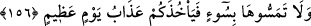
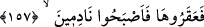
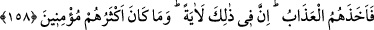

görüşündedir.
156. Ona bir kötülükle ilişmeyin, yoksa sizi muazzam bir günün azâbı
yakalayıverir.
“Ona bir kötülükle ilişmeyin,” O deveye kötülük etmeyiniz; yani vurup öldürmeye
teşebbüs etmeyiniz. Eğer böyle yaparsanız “yoksa sizi muazzam bir günün azâbı
yakalayıverir.” Günün muazzam/büyük oluşu, onda meydana gelen şeyin büyüklüğüne
nisbetledir. Burada ise o, Cibrîl (a.s.)’ın sayhası/haykırmasıdır.
157. Buna rağmen onlar deveyi kestiler; ama pişman da oldular.
“Buna rağmen onlar deveyi kestiler” deveyi takip ettiler ve öldürdüler. Onlar
çarşamba günü deveyi kestiler ve deve öldü. “Kesme” fiili, onların hepsine isnad
edilmiştir. Çünkü deveyi kesen ancak onların rızası ile kesmişti. Bu yüzden hepsi birden
yakalanıp cezalandırıldı.
Rivâyete göre Mısta’ adlı kişi, deveyi bir kenar yolun dar yerine zorla sevk etti. Sonra
ona ok attı ve deve yere düştü. Sonra Kudar isimli biri de devenin dizleri arasındaki
kirişlere vurarak kesti.
Ebû Mûsâ Eş’ârî (r.a.)’tan rivâyete göre o “Ben, o devenin dizleri üzerine
çökertildiği yeri gördüm. Altmışa altmış arşın idi.” demiştir.
İşte Sâlih (a.s.)’ın kavmi, deveyi bu âyette anlatıldığı gibi öldürdüler. “ama” azâbın
gelip tevbenin kabul olunmamasından korkarak veya azâbı gözleriyle gördükleri zaman
onu kestiklerine “pişman da oldular.” Bu yüzden tevbe yoluyla da olsa pişmanlık
onlara fayda etmedi. Tıpkı boğulurken Fir’avn’a fayda vermediği gibi.
“
” elden kaçan bir hususta görüşünün değişmesinden dolayı duyulan pişmanlık ve
hasret demektir
158. Bunun üzerine onları azap yakaladı. Doğrusu bunda, büyük bir ders vardır;
ama çokları iman etmezler.
“Bunun üzerine onları” vaad edilen “azap yakaladı.” O azab ise Cebrâil (a.s.)’ın